Note
Go to the end to download the full example code.
Artifact Correction with DSS.#
DSS is a powerful tool for removing artifacts (ECG, EOG) from data. The core idea is: Artifacts are repetitive.
If we can define when artifacts happen (e.g., using EOG/ECG channels), we can use Trial Average Bias to find the artifact source and remove it.
This tutorial demonstrates two artifact-correction workflows with DSS: blink correction based on EOG epochs and heartbeat correction based on ECG epochs.
- Authors: Sina Esmaeili (sina.esmaeili@umontreal.ca)
Hamza Abdelhedi (hamza.abdelhedi@umontreal.ca)
Imports#
import contextlib
import os
import matplotlib.pyplot as plt
import mne
import numpy as np
from mne.datasets import sample
from mne.preprocessing import create_ecg_epochs, create_eog_epochs
from mne_denoise.dss import DSS, AverageBias, CycleAverageBias
from mne_denoise.viz import (
plot_component_patterns,
plot_component_score_curve,
plot_component_summary,
plot_component_time_series,
plot_evoked_gfp_comparison,
plot_psd_comparison,
)
Load Data#
We use the MNE sample dataset which contains clear ECG and EOG artifacts.
print("Loading MNE Sample data...")
# Ensure MNE_DATA directory exists
home = os.path.expanduser("~")
mne_data_path = os.path.join(home, "mne_data")
if not os.path.exists(mne_data_path):
with contextlib.suppress(OSError):
os.makedirs(mne_data_path)
data_path = sample.data_path()
raw_fname = data_path / "MEG" / "sample" / "sample_audvis_raw.fif"
raw = mne.io.read_raw_fif(raw_fname, preload=True, verbose=False)
raw.crop(0, 60) # Keep full duration but no picking yet
print(f"Data: {len(raw.ch_names)} channels (MEG, EEG, EOG, ECG), 60s duration")
Loading MNE Sample data...
Data: 376 channels (MEG, EEG, EOG, ECG), 60s duration
Part 1: EOG (Blink) Correction#
The goal is to isolate eye blinks. We epoch the data around blink events from the EOG channel, which turns blink reproducibility into the DSS bias.
print("\n--- Part 1: EOG (Blink) Correction ---")
# 1. Create EOG Epochs
eog_epochs = create_eog_epochs(
raw, ch_name="EOG 061", baseline=(-0.5, -0.2), tmin=-0.5, tmax=0.5, verbose=False
)
# IMPORTANT: DSS should be fitted on the data channels (MEG) we want to clean.
# We exclude the EOG channel itself from the model.
eog_epochs.pick_types(meg="grad", eog=False, ecg=False)
print(
f"Found {len(eog_epochs)} blink events. "
f"Using {len(eog_epochs.ch_names)} MEG channels."
)
eog_sensor_picks = np.arange(len(eog_epochs.ch_names))
# 2. Fit DSS with Trial Average Bias
# We use AverageBias(axis='epochs') which works on pre-epoched data.
# Note: We'll compare with CycleAverageBias later (artifact-specific approach).
dss_eog = DSS(
n_components=10,
bias=AverageBias(axis="epochs"),
component_action="extract",
)
dss_eog.fit(eog_epochs)
--- Part 1: EOG (Blink) Correction ---
NOTE: pick_types() is a legacy function. New code should use inst.pick(...).
Found 10 blink events. Using 203 MEG channels.
Visualize Blink Components#
# Score Curve
# The first component should dominate the score curve if the blink bias is
# captured cleanly.
plot_component_score_curve(dss_eog, mode="ratio", show=True)
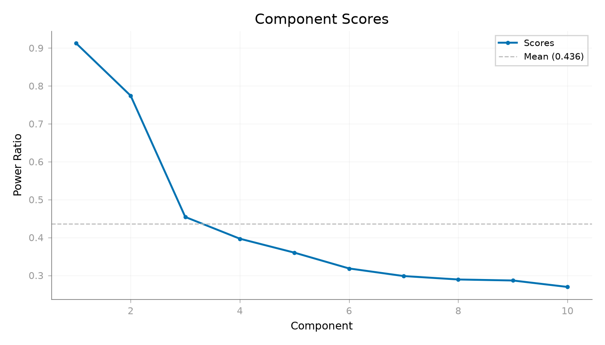
<Figure size 1400x800 with 1 Axes>
Time Series The first component should show the stereotyped blink waveform.
plot_component_time_series(dss_eog, data=eog_epochs, n_components=10, show=True)
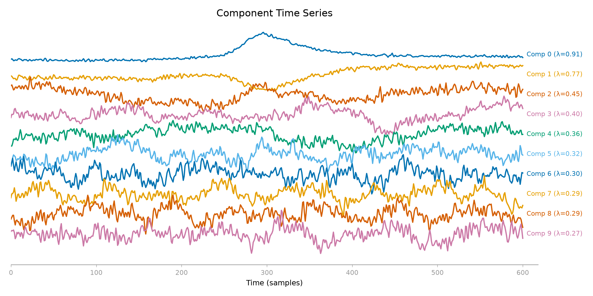
<Figure size 2000x1000 with 1 Axes>
Spatial Patterns The leading blink component should also be spatially frontal.
plot_component_patterns(
dss_eog,
info=eog_epochs.info,
picks=eog_sensor_picks,
n_components=10,
show=True,
)
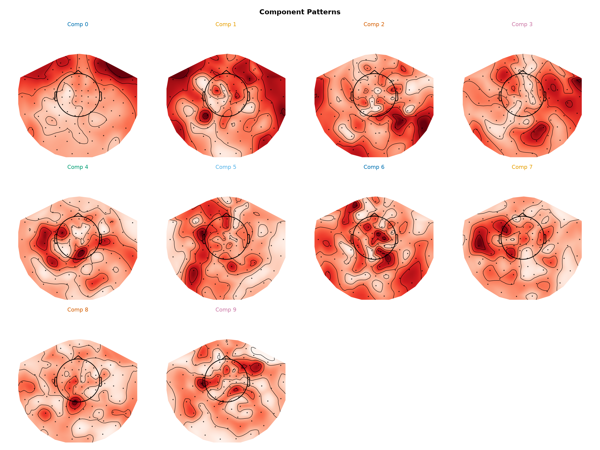
<Figure size 2400x1800 with 12 Axes>
Summary (Topo + Time + PSD)
plot_component_summary(
dss_eog,
data=eog_epochs,
info=eog_epochs.info,
picks=eog_sensor_picks,
n_components=[0, 1],
show=True,
)
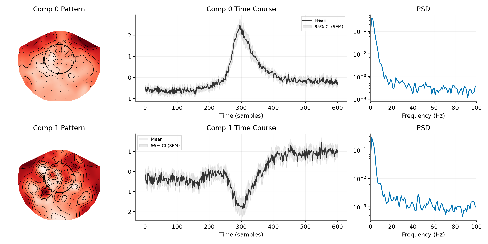
<Figure size 2400x1200 with 6 Axes>
Denoising Comparison#
We project the data into the DSS space, zero out the first component (the blink), and project back.
print("Removing blink component...")
# Transform continuous data
# We must ensure we apply to the same channels used in fit (the gradiometers).
raw_meg = raw.copy().pick_types(meg="grad", eeg=False, eog=False, ecg=False)
raw_meg_picks = np.arange(len(raw_meg.ch_names))
sources = dss_eog.transform(raw_meg)
# Check Correlation with EOG channel
# This validates that Comp 0 is indeed the blink artifact.
eog_picks = mne.pick_types(raw.info, meg=False, eog=True)
if len(eog_picks) > 0:
eog_data = raw.get_data(picks=eog_picks[0]).flatten()
blink_source = sources[0, :]
for i in range(3):
comp_source = sources[i, :]
corr = np.corrcoef(eog_data, comp_source)[0, 1]
print(f"Correlation (Comp {i} vs EOG): {abs(corr):.3f}")
else:
print("No EOG channel found for correlation check.")
# Create dummy data for plot to avoid crash, or skip plot?
# We'll skip plot logic if no channel, but for now let's hope it exists.
eog_data = np.zeros(len(sources[0]))
blink_source = sources[0, :]
# Visual Comparison: EOG vs Component 0
# Show a time window with clear blinks, scaled and aligned
# Find a window with blinks (sample 5000-10000)
start_idx, end_idx = 5000, 10000
t_window = np.arange(start_idx, end_idx) / raw.info["sfreq"]
# Get data snippets
eog_snippet = eog_data[start_idx:end_idx]
comp_snippet = blink_source[start_idx:end_idx]
# Flip component if negatively correlated
corr_window = np.corrcoef(eog_snippet, comp_snippet)[0, 1]
flip = -1 if corr_window < 0 else 1
# Scale component to match EOG amplitude
scale = np.max(np.abs(eog_snippet)) / np.max(np.abs(comp_snippet))
plt.figure(figsize=(12, 4))
plt.plot(t_window, eog_snippet, "b", linewidth=1.5, label="EOG Channel")
plt.plot(
t_window,
flip * comp_snippet * scale,
"r",
linewidth=1.5,
label="DSS Comp 0 (aligned & scaled)",
alpha=0.8,
)
plt.xlabel("Time (s)")
plt.ylabel("Amplitude (a.u.)")
plt.title(f"AverageBias: Blink Peaks Aligned (r={abs(corr):.3f})")
plt.legend()
plt.grid(True, alpha=0.3)
plt.tight_layout()
plt.show()
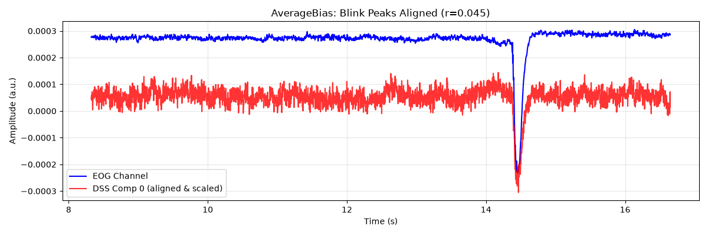
Removing blink component...
NOTE: pick_types() is a legacy function. New code should use inst.pick(...).
Correlation (Comp 0 vs EOG): 0.682
Correlation (Comp 1 vs EOG): 0.340
Correlation (Comp 2 vs EOG): 0.045
Alternative: CycleAverageBias (Continuous Data Approach)#
CycleAverageBias is artifact-specific and works directly on continuous data. Instead of pre-epoching, we provide event samples and a window.
print("\n--- Comparing with CycleAverageBias ---")
# Find blink events from continuous data
from mne.preprocessing import find_eog_events
blink_events = find_eog_events(raw, ch_name="EOG 061", verbose=False)
blink_samples = blink_events[:, 0]
print(f"Found {len(blink_samples)} blink events")
# Create CycleAverageBias
# Window: 100ms before to 100ms after each blink (in samples)
window_samples = (-int(0.1 * raw.info["sfreq"]), int(0.1 * raw.info["sfreq"]))
bias_cycle = CycleAverageBias(
event_samples=blink_samples,
window=window_samples,
window_unit="samples",
event_origin="raw",
first_samp=raw_meg.first_samp,
)
# Fit DSS on continuous MEG data
dss_cycle = DSS(
n_components=10,
bias=bias_cycle,
component_action="extract",
)
dss_cycle.fit(raw_meg)
print("Fitted DSS with CycleAverageBias")
--- Comparing with CycleAverageBias ---
Found 10 blink events
Fitted DSS with CycleAverageBias
Visualize Cycle Average Components#
plot_component_summary(
dss_cycle,
data=raw_meg,
info=raw_meg.info,
picks=raw_meg_picks,
n_components=[0, 1],
show=False,
)
plt.gcf().suptitle("CycleAverageBias Results")
plt.show()
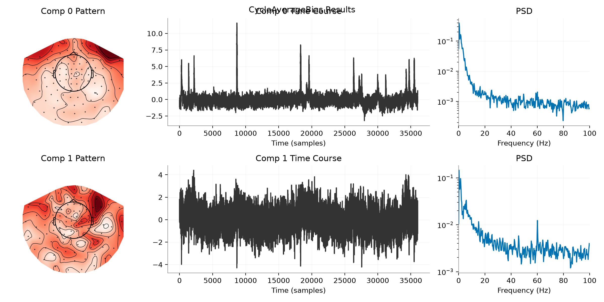
Compare spatial patterns (both bias types)
print("\n--- Comparing Spatial Patterns ---")
plot_component_patterns(
dss_eog,
info=eog_epochs.info,
picks=eog_sensor_picks,
n_components=1,
show=False,
)
plt.gcf().suptitle("AverageBias: Blink Component Topography")
plt.show()
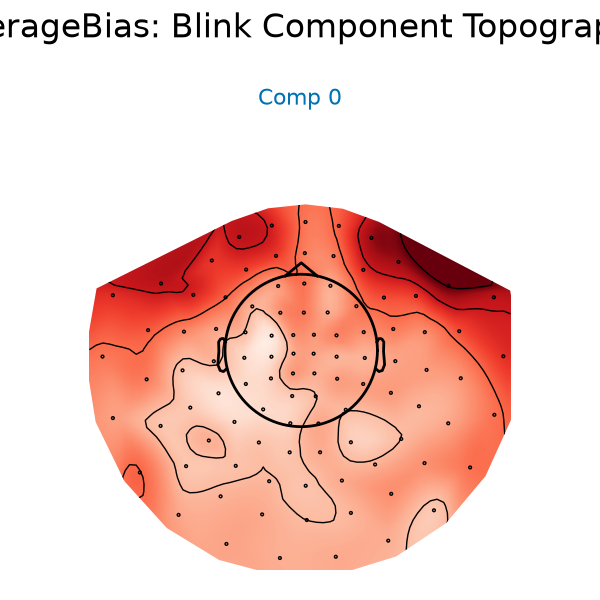
--- Comparing Spatial Patterns ---
plot_component_patterns(
dss_cycle,
info=raw_meg.info,
picks=raw_meg_picks,
n_components=1,
show=False,
)
plt.gcf().suptitle("CycleAverageBias: Blink Component Topography")
plt.show()
print("\nBoth approaches can emphasize a reproducible blink-locked pattern.")
print("- AverageBias(axis='epochs'): Works on MNE Epochs (easier integration)")
print("- CycleAverageBias: Works on continuous data + event samples (more direct)")
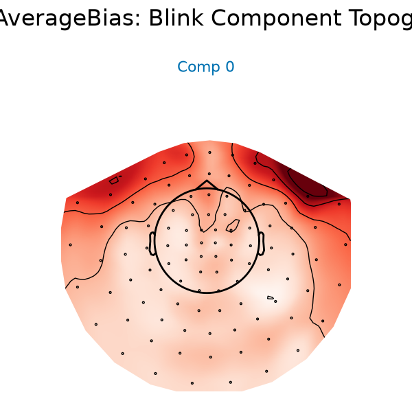
Both approaches can emphasize a reproducible blink-locked pattern.
- AverageBias(axis='epochs'): Works on MNE Epochs (easier integration)
- CycleAverageBias: Works on continuous data + event samples (more direct)
n_samples_plot = int(20 * raw.info["sfreq"]) # Plot 20 seconds
scaler_eog = 1.0 / np.std(eog_data[:n_samples_plot])
scaler_dss = 1.0 / np.std(blink_source[:n_samples_plot])
# Flip DSS source if anti-correlated for better visual comparison
corr_0 = np.corrcoef(eog_data, blink_source)[0, 1]
sign = np.sign(corr_0)
if sign == 0:
sign = 1
plt.figure(figsize=(10, 4))
times_plot = raw.times[:n_samples_plot]
plt.plot(
times_plot,
eog_data[:n_samples_plot] * scaler_eog,
label="EOG Channel (Norm)",
color="tab:orange",
alpha=0.7,
)
plt.plot(
times_plot,
blink_source[:n_samples_plot] * scaler_dss * sign,
label="DSS Comp 0 (Sign-Matched)",
color="tab:blue",
alpha=0.7,
)
plt.title(f"Temporal Comparison: EOG vs DSS Comp 0 (Corr={abs(corr_0):.2f})")
plt.xlabel("Time (s)")
plt.legend()
plt.tight_layout()
plt.show()
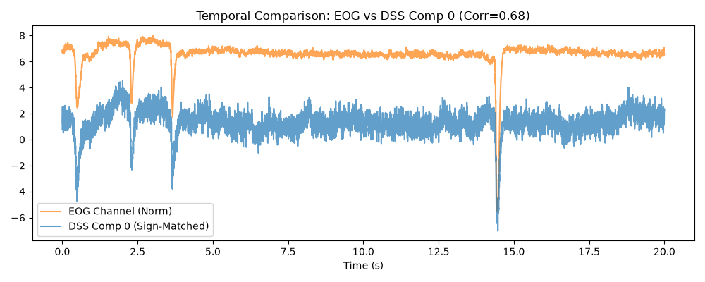
Blink-Locked Average Before and After#
The blink-locked average should shrink strongly after removing the dominant artifact component.
# Zero out blink
sources[0, :] = 0 # Remove Comp 0
# Reconstruct
cleaned_data = dss_eog.inverse_transform(sources)
raw_clean_eog = mne.io.RawArray(cleaned_data, raw_meg.info)
# Compare Raw vs Cleaned on the Blink Epochs
# We verify improvement by looking at the average blink before/after.
# (We need to re-epoch the cleaned data to compare apples-to-apples)
eog_epochs_clean = mne.Epochs(
raw_clean_eog,
eog_epochs.events,
tmin=-0.5,
tmax=0.5,
baseline=(-0.5, -0.2),
verbose=False,
)
print("Plotting correction effect...")
plot_evoked_gfp_comparison(
eog_epochs,
eog_epochs_clean,
times=eog_epochs.times,
show=False,
labels=("Original", "Cleaned"),
)
plt.show()
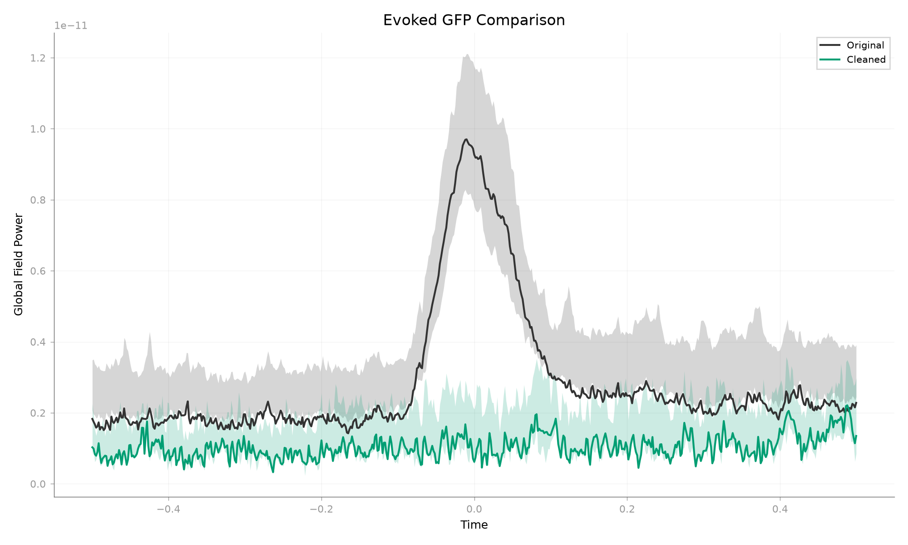
Creating RawArray with float64 data, n_channels=203, n_times=36038
Range : 0 ... 36037 = 0.000 ... 60.000 secs
Ready.
Plotting correction effect...
Using data from preloaded Raw for 10 events and 601 original time points ...
6 bad epochs dropped
Spectral Preservation After Blink Removal#
Blinks are mostly low-frequency (<5 Hz), so the alpha and beta structure should remain broadly stable after denoising.
plot_psd_comparison(eog_epochs, eog_epochs_clean, fmax=40, show=True)
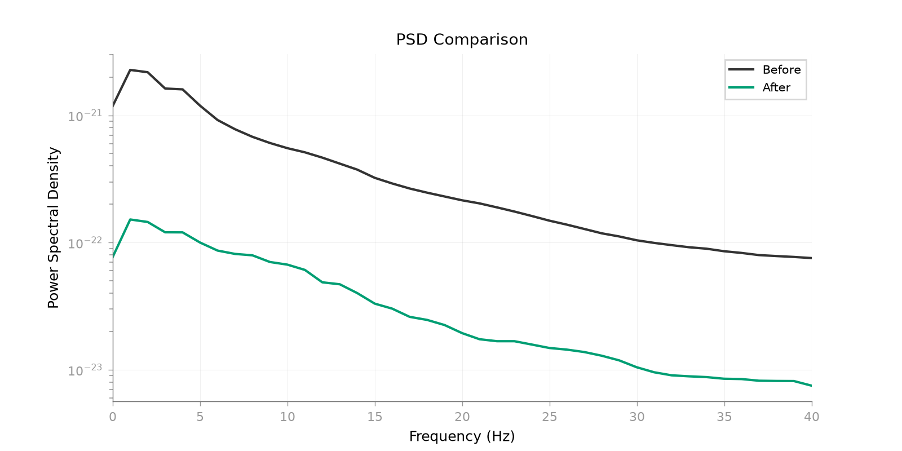
Using multitaper spectrum estimation with 7 DPSS windows
Using data from preloaded Raw for 4 events and 601 original time points ...
Using data from preloaded Raw for 4 events and 601 original time points ...
Using multitaper spectrum estimation with 7 DPSS windows
<Figure size 1600x800 with 1 Axes>
Part 2: ECG (Heartbeat) Correction#
The same idea applies to heartbeat contamination: epoch on the artifact, fit DSS on those repeats, and remove the dominant cardiac component.
print("\n--- Part 2: ECG (Heartbeat) Correction ---")
# 1. Create ECG Epochs
# We let MNE find the ECG channel automatically (looking for type='ecg')
ecg_epochs = create_ecg_epochs(
raw, ch_name=None, tmin=-0.1, tmax=0.1, baseline=(None, 0), verbose=False
)
ecg_epochs.pick_types(meg="grad", eeg=False, eog=False, ecg=False)
print(
f"Found {len(ecg_epochs)} heartbeats. "
f"Using {len(ecg_epochs.ch_names)} MEG channels."
)
ecg_sensor_picks = np.arange(len(ecg_epochs.ch_names))
# 2. Fit DSS
dss_ecg = DSS(n_components=8, bias=AverageBias(axis="epochs"))
dss_ecg.fit(ecg_epochs)
--- Part 2: ECG (Heartbeat) Correction ---
NOTE: pick_types() is a legacy function. New code should use inst.pick(...).
Found 59 heartbeats. Using 203 MEG channels.
Visualize Cardiac Components#
# Score Curve
plot_component_score_curve(dss_ecg, mode="ratio", show=True)
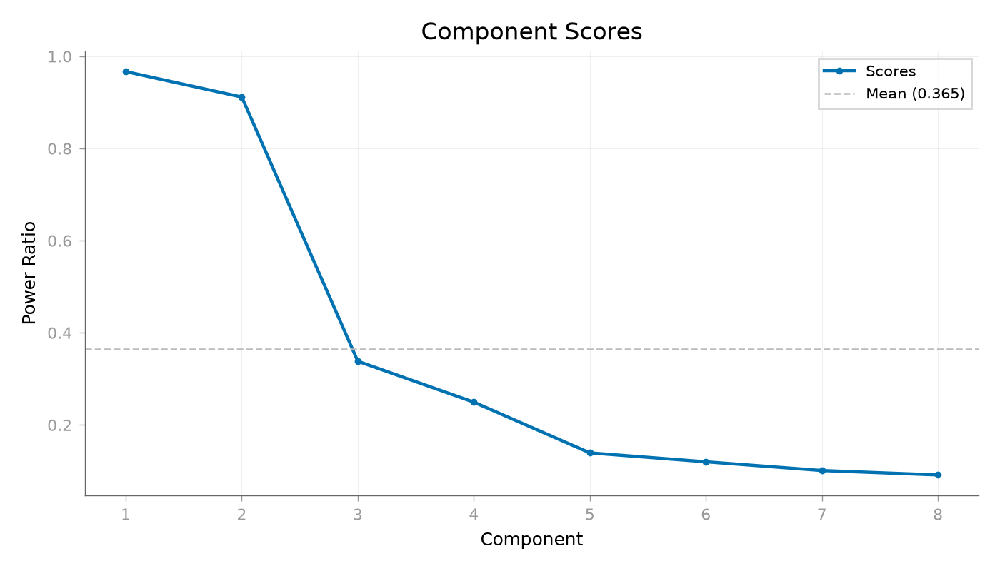
<Figure size 1400x800 with 1 Axes>
Time Series The dominant cardiac component should follow a QRS-like shape.
plot_component_time_series(dss_ecg, data=ecg_epochs, n_components=8, show=True)
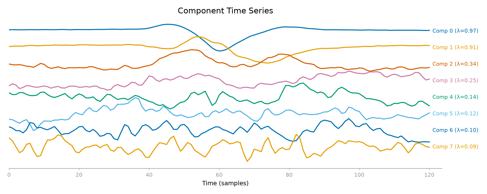
<Figure size 2000x800 with 1 Axes>
Spatial Patterns The corresponding field pattern should look broad and deep rather than strictly focal.
plot_component_patterns(
dss_ecg,
info=ecg_epochs.info,
picks=ecg_sensor_picks,
n_components=8,
show=True,
)
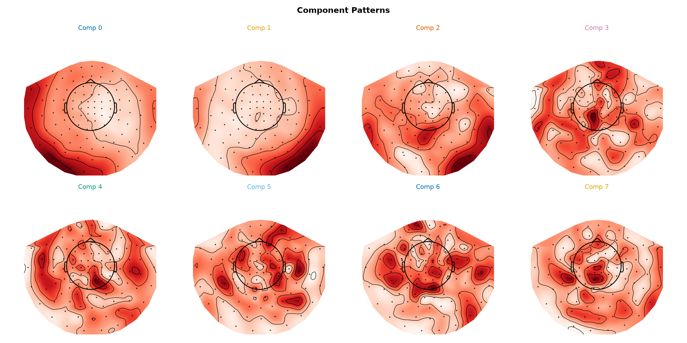
<Figure size 2400x1200 with 8 Axes>
Summary
plot_component_summary(
dss_ecg,
data=ecg_epochs,
info=ecg_epochs.info,
picks=ecg_sensor_picks,
n_components=[0],
show=True,
)
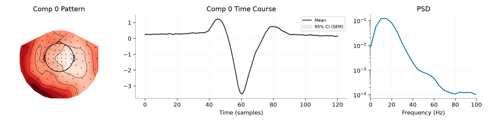
<Figure size 2400x600 with 3 Axes>
Removing the Artifact#
print("Removing cardiac component...")
sources_ecg = dss_ecg.transform(raw_meg) # Apply to continuous data
sources_ecg[0, :] = 0 # Zero out heartbeat
raw_clean_ecg = mne.io.RawArray(dss_ecg.inverse_transform(sources_ecg), raw_meg.info)
Removing cardiac component...
Creating RawArray with float64 data, n_channels=203, n_times=36038
Range : 0 ... 36037 = 0.000 ... 60.000 secs
Ready.
Heartbeat-Locked Average Before and After#
The heartbeat-locked average should show a much smaller QRS-like transient after removing the dominant cardiac component.
# Verification
ecg_epochs_clean = mne.Epochs(
raw_clean_ecg,
ecg_epochs.events,
tmin=-0.1,
tmax=0.1,
baseline=(None, 0),
verbose=False,
)
plot_evoked_gfp_comparison(
ecg_epochs,
ecg_epochs_clean,
times=ecg_epochs.times,
show=False,
labels=("Original", "Cleaned"),
)
plt.show()
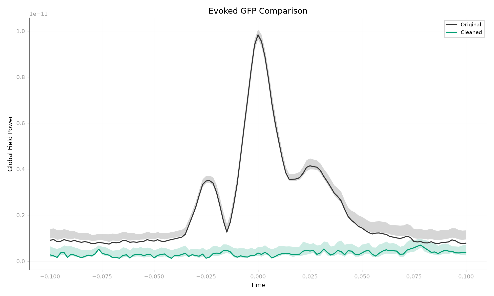
Using data from preloaded Raw for 59 events and 121 original time points ...
42 bad epochs dropped
Spectral Preservation After Heartbeat Removal#
Cardiac harmonics should be reduced while broader neural rhythms remain.
plot_psd_comparison(ecg_epochs, ecg_epochs_clean, fmax=40, show=True)
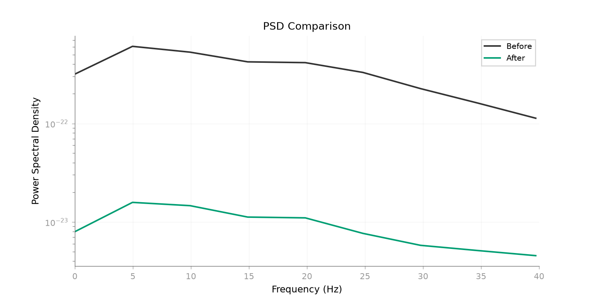
Using multitaper spectrum estimation with 7 DPSS windows
Using data from preloaded Raw for 17 events and 121 original time points ...
Using data from preloaded Raw for 17 events and 121 original time points ...
Using multitaper spectrum estimation with 7 DPSS windows
<Figure size 1600x800 with 1 Axes>
Conclusion#
We used DSS with AverageBias to find and remove stereotypic artifacts. By epoching on the artifact events, we turned the artifact into the most repeatable signal in the data. DSS isolates that repeatable component, and denoising then reduces to zeroing it before projection back to sensor space.
Total running time of the script: (0 minutes 9.211 seconds)